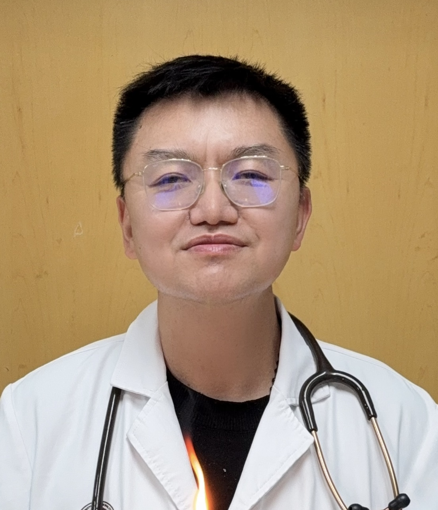
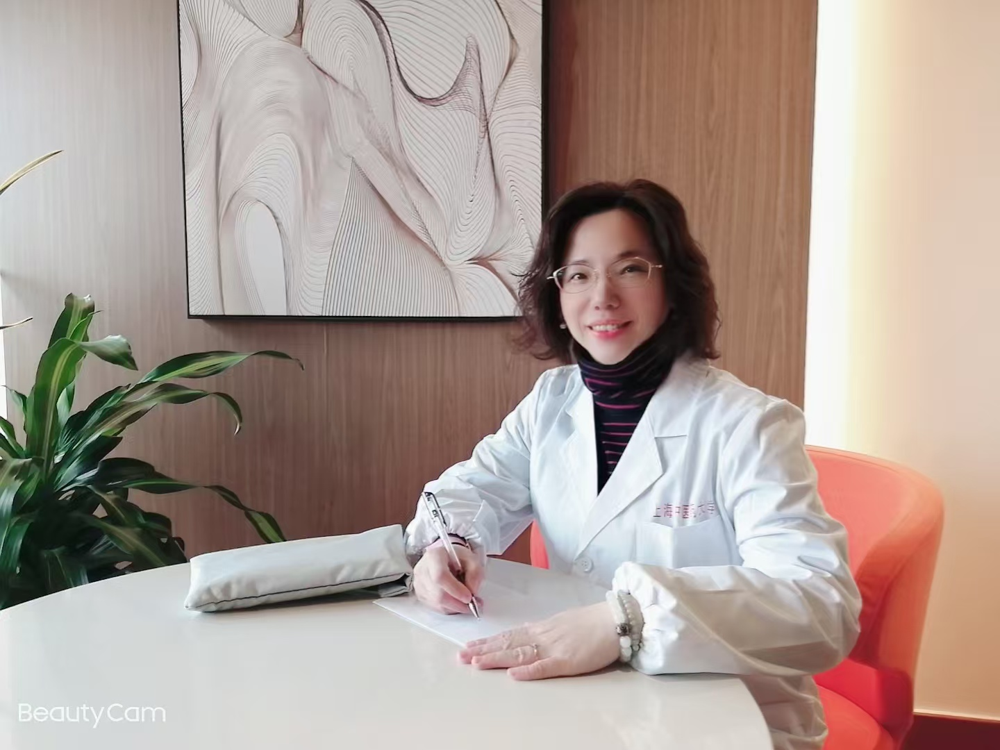

何淼

专家简介
医学博士，中医内科副主任医师。毕业于上海中医药大学，从事中医内科、中西医结合急救与重症医学临床工作已二十余年，兼及教学、科研和医学科普工作，具有丰富的临床经验、广阔的专业视野和扎实的理论素养。先后师从上海市名中医蒋健教授和原中国中西医结合学会重症医学专委会副主委、原上海中医药大学附属曙光医院急诊和重症医学科学术带头人熊旭东教授。
临床专长
① 中医药诊治内科急/慢性病症
② 中药内服外治结合治疗各科杂症：
包括皮肤科、五官科、口腔科、妇科、外科、泌尿科、肛肠科等
③ 中医药调治亚健康状态、体重管理及科学养生指导等

就诊资讯
门诊时间：
周一至周四全天（上午10:00-12:00、下午2:00-6:00）
周日下午1:30-5:30

沈琴峰
专家简介
医学硕士，中医针灸主治医师，毕业于上海中医药大学。长期从事中医内科、针灸科临床工作，现为中国针灸学会会员。通过多年的临床实践，形成了以中医外治法运用针灸、刺络、艾灸和推拿手法并结合中药内服调治多种疾病的治疗特色。沈医生对针灸治疗技术不断探索精进，遍访名师、博采众长，分别师从浦东新区名中医李国安老先生并跟诊针灸门诊多年、师从高荣荣老师学习针灸美颜抗衰老技术、师从董晗老师学习综合外治法等。
临床专长
①内科诸症：针药结合治疗失眠、焦虑、脱发、头痛、牙痛、胃痛等；
②调理妇科常见病：月经不调、更年期综合征、卵巢早衰等；
③皮肤问题：痤疮、湿疹、黄褐斑等；
④面部抗衰：针灸改善面部浮肿暗黄、淡化法令纹、提拉眼角与提升苹果肌、调整大小脸等；
⑤筋骨痛症：针灸结合外治手法治疗各种痛症（颈肩腰腿痛、落枕等）。
就诊资讯
门诊时间：每周二、周日下午1:30-6:00（国定节假日除外）